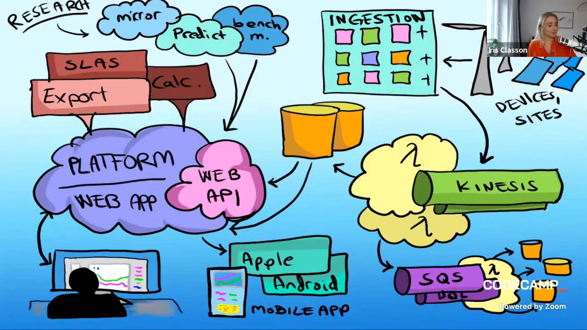
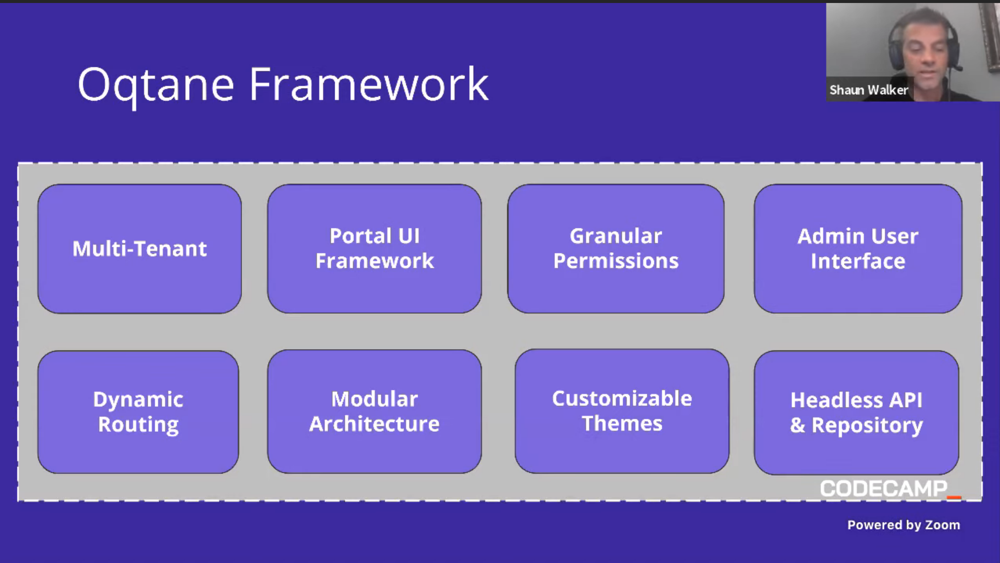
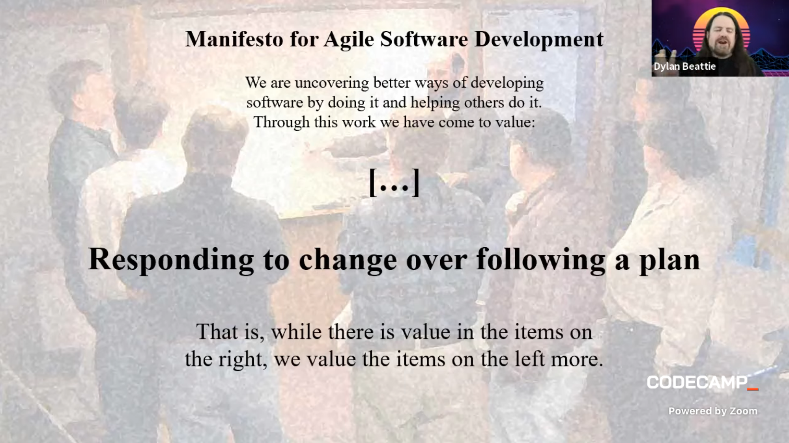

Notes on Day 1 - The One with Dotnet @Codecamp Romania, 2021
13:45 - 14:00
The first conference day started with Dino Esposito discussing that it matters more the soft skills and the pragmatic way to approach problems rather than the used technology, like .NET.
In a sports business, the money comes from the data, that is applied to the sportsmen and women. All the things that we are seeing on TV look so simple, but all of them are based on data. “Data is gold”.
Data Science is only an umbrella because we need engineering to apply the science and make it available. This definition of Science fits Machine Learning and all those technologies related to it.
(Data) Engineering vs (Data) Science - March 24 14:00 - 14:45 - Dino Esposito
- Data Science is a starting point, and Data Engineering is the final point.
- Science demonstrates what can be done, and Engineering shows how that works.
- AI is considered to be just software, but it can become intelligent.
- Software that we write today is not as intelligent as ML one.
- The Data Science Teams is working with the dataset.
- Most of the time the algorithm is all right, the problem might be with the web service as a link in a chain that might be broken.
- The role of Data Engineer override with DS and ML Developer. And that is because that guarantees raw data is captured and in the right way to be processed and become a product.
- Data Scientist used techniques from math and stats to view through the raw data available. It can be compared with a sculptor, that takes out marble pieces to make a beautiful sculpture. It might have a view before processing (sculpting) and through the data. The DS should tell the company what can be learned from the data and what can be planned.
- Data Scientist can be viewed as a Product Owner, but for data. Data Scientist should have advanced knowledge in abstract math.
- The company has a team of DS that think can be a great asset with the risk of producing nothing real but coming with ideas.
- In history the Data scientists were done by most of the big kingdom to support expeditions in unknown territories, in the hope of getting a financial return.
- The DE is not expected to have a deep knowledge of math but should have deep knowledge of databases. For example, how to move big data, from Data Lake to Data Warehouse. Should also have skills of how to automate those processes. Should also know knowing how often the expected model should be re-trained to stay adherent to close real data.
- Companies to improve applications need real-world workloads to be scalable enough.
- A role of DS is not enough, the company also needs DE and infrastructure.
- A role is a set of skills of an individual.
- The professional is also about an individual but has the skills to cover a given role.
- The ML Engineer should write good software, applying best practices, and being comfortable with web services technologies like API or gRPC. The ML engineer should also incorporate a trained model into a client application.
- Two interesting ideas about how knowledge can be spread:
- T-shaped knowledge is a deep vertical in one area and basic knowledge of several other side areas.
- Y-shaped is a deep vertical in one area and good knowledge good enough in a small number of side areas.
- ML.NET comes as a framework to be helpful to data engineers and ML engineers rather than data scientists. ML.NET can manage up to 1TB of data. Is a tool that helps to integrate ML solution inside of existing or new .NET application. ML.NET is not a Microsoft version of Python is a tool for Data Scientists and Data Engineers.
Single-tenant to multi-tenant, a real world example - March 24 15:00 - 15:45 - Iris Classon
- Nice presentation slides, drawn by her.
Sneak peek:

- Was a discussion about multiple clients that access a load balancer, which redirects them to a cluster that contains an app, and that app shares multiple databases (tenants) to each client.
- The old version of this was by creating an app for each client, that involves too many resources.
- The new architecture looks something like in the above picture.
- The problem with this architecture is that it should be too many instances of the Web API and also the deployment takes half a week. The deployment for approximately 120 customers takes 2 to 3 hours.
- To being fixing that problem, she started with the Web API by using multiple tenants. The tenant can be identified by the subdomain, the domain, or a path.
- The later you do it, the easier it is to get it wrong.
- On a previous company all that logic was on-premises and then to a local cloud provider. But now on the current company, the application became tenant agnostic that runs on the cloud and also has a load balancer.
The pros:
- Cost saving for scaling.
- Simplified and faster deploying process.
- Logs should be treated differently because we’re not going to have logs per customer.
The cons:
- Clients are not isolated, so the connection should be encrypted.
Trailblazor: Building Dynamic Applications with Blazor - March 24 16:00 - 16:45 - Shaun Walker
- Dynamic applications are also called plugin applications, modular applications, or dynamic applications.
- The benefits are the extensibility of being loosely coupled, which can be developed in parallel.
- Blazor provides a consistent set of technologies to build both backend and frontend.
- A Razor Component has capabilities such as routing, parameters, binding, and life cycle events.
- The web app in the Blazor Server and the communication with the DOM (Browser) is done with SignalR.
- The newer model done in ASP.NET Core, is done by using Web Assembly, and all that code is run in the browser.
- There is an open source app framework build on Blazor called Oqtane. Can be used to create modern web applications with less called. (boilerplates). “Rocket Fuel for Blazor”
- The benefits and the features of Oqtane Framework:

- At first look, the razor code looks like aspx code but doesn’t have a .cs file. As far as I understood a partial class can be created to move the code from the razor page.
- The Oqtane should be configured like a WordPress site before using it. The configuration is simple, and after that, the administrator is redirected to the admin page, where settings can be made.
- Even the application looks more like WordPress because content can be added from within the website. This a high-level comparison because the website is using Web Assembly so it has much more capabilities than WordPress.
- Also modules can be created in code, deployed to Oqtane, and then added to the website via admin panel. When creating a module from inside the app, a whole solution is created locally on the server machine, with Client, Server, Package all the projects need for the specific module.
- Oqtane is WordPress on extraterrestrial steroids. At first look is so powerful, and a much better comparison it would be with Oracle Apex, but with total control.
Moving a 20 year old .NET on Windows blog to Linux, Containers and Azure - March 24 17:00 - 17:45 - Scott Hanselman
- Scott start presenting his website. He started blogging in 2002 with .NET 2.0 and then upgraded to .NET 4.x in a Windows Server.
- Because it was hosted on a Windows Server, he needed to login in with RDP for troubleshooting. At that time this Windows Server was hosted, but not a VM on a physical server.
- One of the requirements when moving to another framework was to not break the URLs.
- There is a .NET Portability Analyzer that helps us find code that can’t be moved to a new .NET framework.
- Dotnet try-convert can be used to try to convert a .NET framework project from an old version to a newer one.
- Scott shows how to build the same application in Windows and Ubuntu (WSL) and .NET 5.
- Also some scripts can deploy the blog to Docker containers and can be also hosted to Azure or any cloud provider.
- Azure Front Doors is similar to Cloudflare, which can take different domains and map them to a different backend.
- His /blog is a different Azure App, and this redirect can be done within the same site with Azure Front Doors. Also, the certificate can be owned but managed by Azure.
- The breakdown of the virtual machines was done systematically to not break the website.
- Also by using .NET the website can be moved to any cloud provider.
Architecture – The Stuff That’s Hard To Change - March 24 18:00 - 18:45 - Dylan Beattie
- Fred Brooks discussed computer architecture in 1962.
- The stuff that is hard to change are those components that were built wrong and cost money to change them or a part of them.

- The architect should look forward and see what’s coming.
- To understand software, we should not look at the code because it is time-consuming. We should look at the traffic pattern, such as HTTP requests, load balancing, how many requests supports.
- We need to ask the right question to be turned into meaningful metrics. For example knowing who to protect, for multiple-factor authentication.
- Before reinventing the wheel search for an existing library, for example from nuget.
- Diagrams should be clear, showing exactly what each of the entries should look like. Add more details to the diagrams to be easily understood.
- I recommend following Dylan Beattie on Twitter (https://twitter.com/dylanbeattie) and the conferences he is attending.